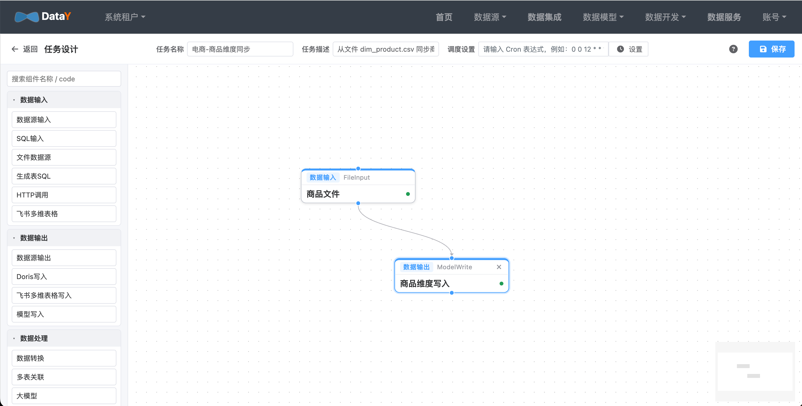
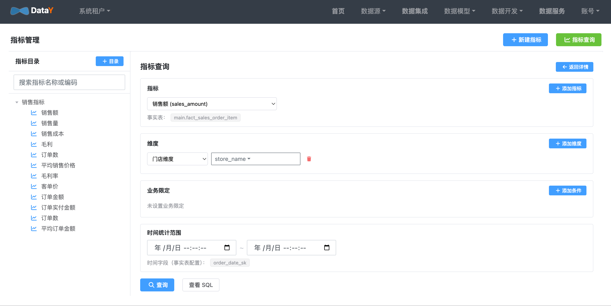
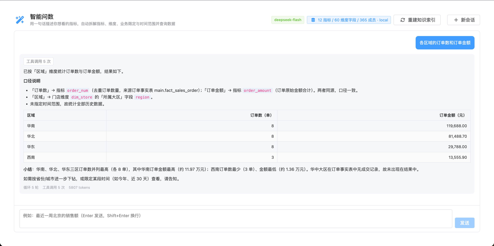

2 核 4G跑通全链路
1 个 JAR内嵌 DuckDB
20+数据源支持
5 大能力一体化平台
为什么是 DataY？
用最极致的硬件利用，交付最完整的数据能力。
传统方案
- Hadoop / Spark / Flink / Doris / DolphinScheduler 一整套
- 几十上百台机器起步
- 运维门槛高，需要专职大数据工程师
DataY
- 一个 JAR，内嵌 DuckDB，拒绝组件地狱
- 2 核 4G 即可跑通数据集成 → 数仓 → 问数
- 零依赖启动，10 分钟搭好开发环境
五大能力，一个平台
数据集成 · 数据建模 · 数据开发 · 任务调度 · 数据应用
一条链路，覆盖数据全生命周期
从数据接入到数据应用，平台内闭环。
数据集成ETL / CDC
→
数据建模维度 / 指标
→
数据开发画布 / 任务
→
任务调度Cron / DAG
→
数据应用问数 / 报表



快速开始
克隆、构建、启动，10 分钟见到完整平台。启动时自动预置一整套电商示例，登录即用。
- 数据源：电商数仓（DuckDB）
- 维度表：日期 / 客户 / 门店 / 商品 / 品牌 / 品类 / 时间
- 事实表：销售订单、订单明细、会员
- 指标：销售额、销量、毛利、毛利率、客单价等 12 个
# 1. 克隆仓库
git clone https://cnb.cool/yuyuejia/datay
# 2. 构建项目
cd datay
mvn clean package -DskipTests
# 3. 启动（单机模式，调度 + 执行合一）
java -jar datay-web/target/*.jar \
--DATAY_AI_API_KEY=sk-xxxxxxxxx
# 4. 打开 http://localhost:8080
# 默认账号 admin / admin